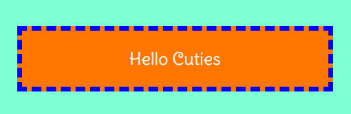

Hello, For this project I'll be using several colors to demonstrate the Box Model. Now for the content I wanted that to be white so it can stand all by itself. The padding we color it orange, clearly showing the space inside the border but around the content. Next, for the border we dash it and style it with a strikeing blue, that way you can easily tell them all apart, the blue color is distinct. Finally, aqua/teal will be used for the margin area, the space outside the border. Together all these colors help show the box model in its entirety. The different colors show the areas of which we are able to modify. All elements have a box model you just gotta apply it.